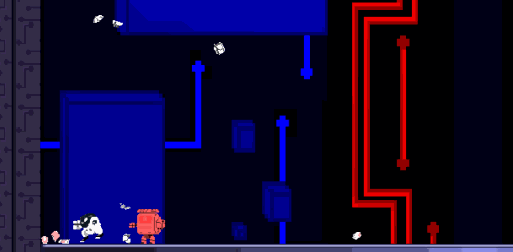
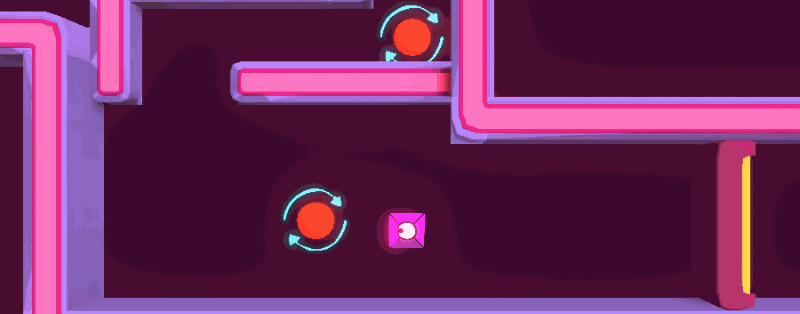
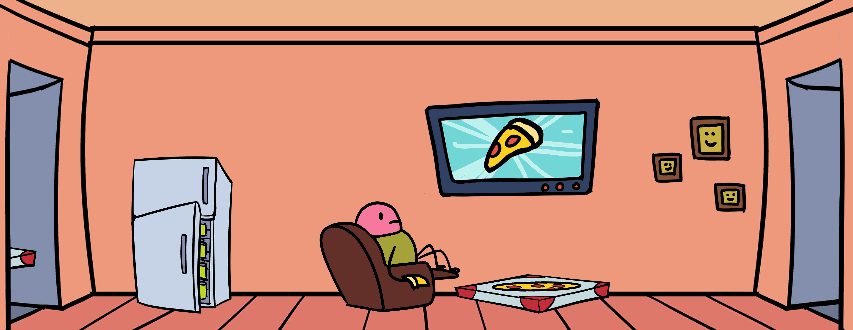

-
About
Hi, I'm Tyler. I program games, software, and websites. This is my porfolio!
-
2019/10
Bot-E Builder
Joshua L (@joshua-liew) 2D Art & Animation Andrew A (@aultmanandrew) Level Design & Audio Spencer D (@dreadbox) Programming Edan A (@edanabate) 2D Art & Animation Tyler S (@rockclaw) Programming Bot-E Builder was created within 72 hours for the Ludum Dare Game Jam under the theme of "Start with nothing". Our talented group worked dilligently to put together the ambitious idea of a game where you build up abilities by stealing them from other robots. It was a welcome challenge to coordinate building a tight game with a large group and distributed tasks, and ultimately a lot of fun. The game has a stable web release available here, the files for which can be found on my GitHub.
-
2019/08
Geo Twist
Liza D (@lizadesya) 2D Art & Animation, Level Design Edan A (@edanabate) 3D Art Tyler S (@rockclaw) Programming & Level Level Design Geo Twist was created within 48 hours for the 2019 GTMK Game Jam under the theme of "Only One". As a group of three collectively going in to our second jam, we had an idea of how to tackle the game quickly without getting caught on prototyping dead ends. A few hours of brainstorming and paper-prototyping some ideas led to this game, a test of reflexes and ability ot navigate levels with unorthodox controls. Much of the jam time was spent implementing visuals and building out levels. The game has a stable web release available here, the files for which can be found on my GitHub.
-
2018/12
Alexa, Run!
Liza D (@lizadesya) Art & Animation Jason T Art & Animation Edan A (@edanabate) Art & Animation Tyler S (@rockclaw) Programming & Level Construction Alexa, Run! Was created within 48 hours for the 2018 Global Game Jam under the theme of "What home means to you". As a group of four, and a first jam for most of us, it was a great learning experience and a lot of fun all around. The game has since had its code cleaned up and assets optomized for a stable web release, the files for which can be found on my GitHub.